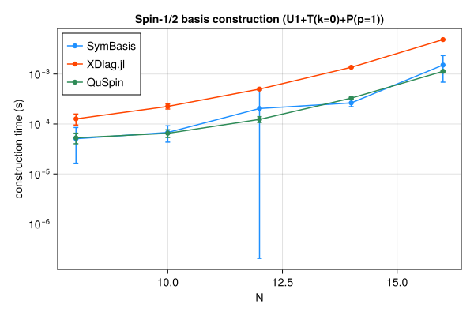
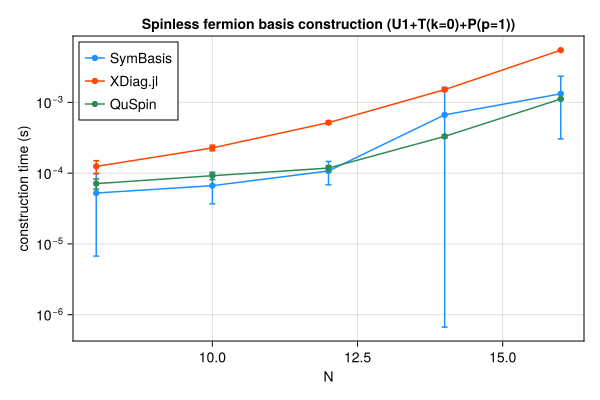
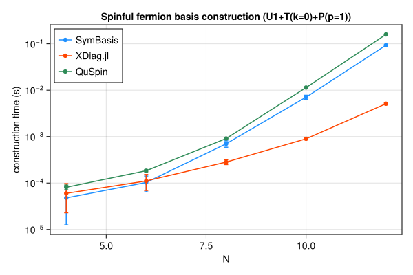
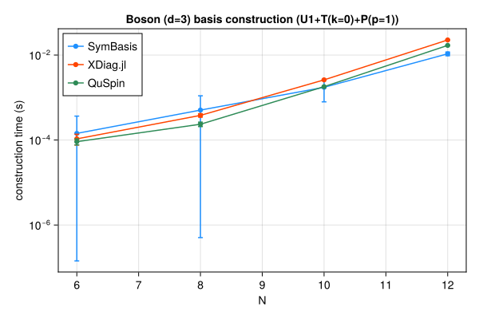

Symmetry-resolved basis construction and representative-state lookup speed, compared against XDiag.jl and QuSpin. SymBasis is benchmarked against its own dev checkout; XDiag.jl and QuSpin are whatever their latest released versions were at the time this page was generated. Regenerated automatically on every SymBasis release.
Threads are left at each library's own defaults (JULIA_NUM_THREADS=auto, OMP_NUM_THREADS unset) rather than pinned to 1 – these numbers reflect out-of-the-box performance, not a strictly single-threaded comparison.
Sweep: BENCH_SWEEP=quick
plot_construction("spin", "Spin-1/2")

| N | config | dim | SymBasis | XDiag | QuSpin | XDiag/SymBasis | QuSpin/SymBasis |
|---|
| 8 | U1 | 70 | 2.569e-05 ± 3.7e-05 s | 4.507e-06 ± 6.9e-06 s | 4.035e-05 ± 1.8e-05 s | 0.18x | 1.57x |
| 8 | U1+T(k=0) | 10 | 3.987e-05 ± 2.9e-05 s | 5.803e-05 ± 3.1e-05 s | 4.871e-05 ± 1.2e-05 s | 1.46x | 1.22x |
| 8 | U1+T(k=0)+P(p=1) | 8 | 5.068e-05 ± 3.4e-05 s | 0.0001267 ± 3.1e-05 s | 5.279e-05 ± 1.3e-05 s | 2.50x | 1.04x |
| 10 | U1 | 252 | 0.0001277 ± 0.00018 s | 4.655e-06 ± 6.8e-06 s | 3.491e-05 ± 7.6e-06 s | 0.04x | 0.27x |
| 10 | U1+T(k=0) | 26 | 5.495e-05 ± 3.5e-05 s | 0.0001003 ± 2.5e-05 s | 5.546e-05 ± 1.6e-05 s | 1.83x | 1.01x |
| 10 | U1+T(k=0)+P(p=1) | 16 | 6.76e-05 ± 2.4e-05 s | 0.0002249 ± 2.6e-05 s | 6.509e-05 ± 1.1e-05 s | 3.33x | 0.96x |
| 12 | U1 | 924 | 4.682e-05 ± 3.3e-05 s | 5.161e-06 ± 6.9e-06 s | 4.593e-05 ± 1.1e-05 s | 0.11x | 0.98x |
| 12 | U1+T(k=0) | 80 | 0.0004848 ± 0.00076 s | 0.0002813 ± 2.3e-05 s | 9.062e-05 ± 1.1e-05 s | 0.58x | 0.19x |
| 12 | U1+T(k=0)+P(p=1) | 50 | 0.0002041 ± 0.00028 s | 0.0004995 ± 2.5e-05 s | 0.0001236 ± 1.7e-05 s | 2.45x | 0.61x |
| 14 | U1 | 3432 | 0.0003391 ± 0.00065 s | 6.455e-06 ± 8.1e-06 s | 6.669e-05 ± 1.1e-05 s | 0.02x | 0.20x |
| 14 | U1+T(k=0) | 246 | 0.0001678 ± 3.8e-05 s | 0.0009986 ± 4.1e-05 s | 0.0002221 ± 1.1e-05 s | 5.95x | 1.32x |
| 14 | U1+T(k=0)+P(p=1) | 133 | 0.0002644 ± 4.2e-05 s | 0.001365 ± 2.2e-05 s | 0.0003295 ± 1.3e-05 s | 5.16x | 1.25x |
| 16 | U1 | 12870 | 0.0007086 ± 0.00069 s | 7.132e-06 ± 8.6e-06 s | 0.0001487 ± 9.4e-06 s | 0.01x | 0.21x |
| 16 | U1+T(k=0) | 810 | 0.0008242 ± 0.00069 s | 0.003888 ± 3.2e-05 s | 0.0007338 ± 1.6e-05 s | 4.72x | 0.89x |
| 16 | U1+T(k=0)+P(p=1) | 440 | 0.001514 ± 0.00083 s | 0.004887 ± 4.2e-05 s | 0.001132 ± 3e-05 s | 3.23x | 0.75x |
| N | config | nsamples | SymBasis | XDiag | QuSpin |
|---|
| 16 | U1+T(k=0)+P(p=1) | 10000 | 2.982e-07 ± 9.2e-10 s | N/A (no decoupled API) | 1.796e-07 ± 2.4e-09 s |
plot_construction("fermion", "Spinless fermion")

| N | config | dim | SymBasis | XDiag | QuSpin | XDiag/SymBasis | QuSpin/SymBasis |
|---|
| 8 | U1 | 70 | 6.723e-05 ± 0.00014 s | 4.621e-06 ± 6.2e-06 s | 4.7e-05 ± 1.2e-05 s | 0.07x | 0.70x |
| 8 | U1+T(k=0) | 9 | 4.383e-05 ± 3.2e-05 s | 5.514e-05 ± 3.2e-05 s | 6.251e-05 ± 1.1e-05 s | 1.26x | 1.43x |
| 8 | U1+T(k=0)+P(p=1) | 6 | 5.242e-05 ± 4.6e-05 s | 0.0001245 ± 2.6e-05 s | 7.118e-05 ± 1.2e-05 s | 2.37x | 1.36x |
| 10 | U1 | 252 | 3.324e-05 ± 3.8e-05 s | 4.141e-06 ± 6.3e-06 s | 4.825e-05 ± 7.4e-06 s | 0.12x | 1.45x |
| 10 | U1+T(k=0) | 26 | 4.854e-05 ± 3.5e-05 s | 0.000108 ± 2.4e-05 s | 7.718e-05 ± 1.1e-05 s | 2.23x | 1.59x |
| 10 | U1+T(k=0)+P(p=1) | 16 | 6.652e-05 ± 3e-05 s | 0.0002274 ± 2.1e-05 s | 9.195e-05 ± 1.1e-05 s | 3.42x | 1.38x |
| 12 | U1 | 924 | 0.0003349 ± 0.00025 s | 4.585e-06 ± 6.2e-06 s | 6.127e-05 ± 1.1e-05 s | 0.01x | 0.18x |
| 12 | U1+T(k=0) | 76 | 0.0001355 ± 0.00019 s | 0.000308 ± 2.6e-05 s | 0.0001186 ± 2.7e-05 s | 2.27x | 0.88x |
| 12 | U1+T(k=0)+P(p=1) | 33 | 0.0001073 ± 3.9e-05 s | 0.0005177 ± 2.8e-05 s | 0.000118 ± 1e-05 s | 4.82x | 1.10x |
| 14 | U1 | 3432 | 9.099e-05 ± 2.9e-05 s | 5.295e-06 ± 6.7e-06 s | 6.611e-05 ± 1.4e-05 s | 0.06x | 0.73x |
| 14 | U1+T(k=0) | 246 | 0.0005714 ± 0.00085 s | 0.001083 ± 2.4e-05 s | 0.0002248 ± 1.3e-05 s | 1.90x | 0.39x |
| 14 | U1+T(k=0)+P(p=1) | 113 | 0.000667 ± 0.00096 s | 0.001512 ± 4.8e-05 s | 0.0003306 ± 1.8e-05 s | 2.27x | 0.50x |
| 16 | U1 | 12870 | 0.0007037 ± 0.00064 s | 7.017e-06 ± 8.4e-06 s | 0.0001502 ± 1.2e-05 s | 0.01x | 0.21x |
| 16 | U1+T(k=0) | 809 | 0.000511 ± 0.0001 s | 0.004374 ± 3.3e-05 s | 0.0007345 ± 9.1e-06 s | 8.56x | 1.44x |
| 16 | U1+T(k=0)+P(p=1) | 422 | 0.001323 ± 0.001 s | 0.005471 ± 4.7e-05 s | 0.001117 ± 1.2e-05 s | 4.14x | 0.84x |
| N | config | nsamples | SymBasis | XDiag | QuSpin |
|---|
| 16 | U1+T(k=0)+P(p=1) | 10000 | 3.554e-07 ± 1.7e-09 s | N/A (no decoupled API) | 1.87e-06 ± 1.8e-08 s |
plot_construction("spinful_fermion", "Spinful fermion")

| N | config | dim | SymBasis | XDiag | QuSpin | XDiag/SymBasis | QuSpin/SymBasis |
|---|
| 4 | U1 | 36 | 3.082e-05 ± 3e-05 s | 8.793e-06 ± 1.8e-05 s | 6.049e-05 ± 1.6e-05 s | 0.29x | 1.96x |
| 4 | U1+T(k=0) | 10 | 4.434e-05 ± 3.7e-05 s | 3.39e-05 ± 3e-05 s | 7.359e-05 ± 1.8e-05 s | 0.76x | 1.66x |
| 4 | U1+T(k=0)+P(p=1) | 6 | 4.781e-05 ± 3.5e-05 s | 6e-05 ± 3.7e-05 s | 8.102e-05 ± 9.5e-06 s | 1.26x | 1.69x |
| 6 | U1 | 400 | 6.573e-05 ± 6.3e-05 s | 5.489e-06 ± 9.2e-06 s | 7.02e-05 ± 1.2e-05 s | 0.08x | 1.07x |
| 6 | U1+T(k=0) | 68 | 7.406e-05 ± 3.8e-05 s | 5.463e-05 ± 3.6e-05 s | 0.0001259 ± 1.1e-05 s | 0.74x | 1.70x |
| 6 | U1+T(k=0)+P(p=1) | 38 | 0.0001029 ± 3.8e-05 s | 0.000111 ± 4.2e-05 s | 0.0001842 ± 1.1e-05 s | 1.08x | 1.79x |
| 8 | U1 | 4900 | 0.0008477 ± 0.00089 s | 6.236e-06 ± 1.2e-05 s | 0.0001246 ± 1.3e-05 s | 0.01x | 0.15x |
| 8 | U1+T(k=0) | 618 | 0.0007597 ± 0.00083 s | 0.000124 ± 3.5e-05 s | 0.0005303 ± 1.8e-05 s | 0.16x | 0.70x |
| 8 | U1+T(k=0)+P(p=1) | 318 | 0.0006992 ± 0.00011 s | 0.0002824 ± 3.3e-05 s | 0.0009068 ± 6e-06 s | 0.40x | 1.30x |
| 10 | U1 | 63504 | 0.00261 ± 0.0004 s | 5.942e-06 ± 9.5e-06 s | 0.00105 ± 9.6e-06 s | 0.00x | 0.40x |
| 10 | U1+T(k=0) | 6352 | 0.005088 ± 0.00099 s | 0.0003964 ± 3.2e-05 s | 0.006453 ± 3e-05 s | 0.08x | 1.27x |
| 10 | U1+T(k=0)+P(p=1) | 3212 | 0.007077 ± 0.00071 s | 0.0008954 ± 4.3e-05 s | 0.01139 ± 8.2e-05 s | 0.13x | 1.61x |
| 12 | U1 | 853776 | 0.02281 ± 0.015 s | 6.719e-06 ± 1e-05 s | 0.01531 ± 3.1e-05 s | 0.00x | 0.67x |
| 12 | U1+T(k=0) | 71188 | 0.0513 ± 0.0021 s | 0.002033 ± 7.7e-05 s | 0.08983 ± 0.00029 s | 0.04x | 1.75x |
| 12 | U1+T(k=0)+P(p=1) | 35694 | 0.09304 ± 0.0023 s | 0.005114 ± 0.00028 s | 0.1588 ± 0.00094 s | 0.05x | 1.71x |
| N | config | nsamples | SymBasis | XDiag | QuSpin |
|---|
| 12 | U1+T(k=0)+P(p=1) | 10000 | 1.415e-06 ± 6.6e-09 s | N/A (no decoupled API) | 2.215e-06 ± 8.6e-09 s |
plot_construction("boson", "Boson (d=3)")

| N | config | dim | SymBasis | XDiag | QuSpin | XDiag/SymBasis | QuSpin/SymBasis |
|---|
| 6 | U1 | 141 | 4.567e-05 ± 7.4e-05 s | 4.82e-06 ± 6.3e-06 s | 6.024e-05 ± 1.7e-05 s | 0.11x | 1.32x |
| 6 | U1+T(k=0) | 26 | 9.429e-05 ± 7.3e-05 s | 6.2e-05 ± 2.9e-05 s | 7.99e-05 ± 1.1e-05 s | 0.66x | 0.85x |
| 6 | U1+T(k=0)+P(p=1) | 18 | 0.0001433 ± 0.00022 s | 0.0001066 ± 3e-05 s | 9.154e-05 ± 1.5e-05 s | 0.74x | 0.64x |
| 8 | U1 | 1107 | 0.0001626 ± 0.0001 s | 6.426e-06 ± 7.2e-06 s | 9.667e-05 ± 1.1e-05 s | 0.04x | 0.59x |
| 8 | U1+T(k=0) | 142 | 0.0002518 ± 0.00033 s | 0.0002546 ± 2.7e-05 s | 0.0002305 ± 1.5e-05 s | 1.01x | 0.92x |
| 8 | U1+T(k=0)+P(p=1) | 84 | 0.0005066 ± 0.00059 s | 0.0003804 ± 3.5e-05 s | 0.0002353 ± 2.8e-05 s | 0.75x | 0.46x |
| 10 | U1 | 8953 | 0.001182 ± 0.00099 s | 1.502e-05 ± 1.4e-05 s | 0.0002902 ± 1.1e-05 s | 0.01x | 0.25x |
| 10 | U1+T(k=0) | 902 | 0.0009683 ± 0.00044 s | 0.00207 ± 0.00012 s | 0.001497 ± 1.7e-05 s | 2.14x | 1.55x |
| 10 | U1+T(k=0)+P(p=1) | 486 | 0.001741 ± 0.00095 s | 0.002603 ± 3.7e-05 s | 0.001802 ± 1.9e-05 s | 1.49x | 1.03x |
| 12 | U1 | 73789 | 0.003738 ± 0.0015 s | 3.168e-05 ± 1.3e-05 s | 0.002098 ± 1.1e-05 s | 0.01x | 0.56x |
| 12 | U1+T(k=0) | 6166 | 0.006701 ± 0.001 s | 0.02379 ± 0.006 s | 0.01411 ± 2.4e-05 s | 3.55x | 2.11x |
| 12 | U1+T(k=0)+P(p=1) | 3179 | 0.01069 ± 0.0011 s | 0.02263 ± 0.00023 s | 0.01686 ± 1.3e-05 s | 2.12x | 1.58x |
| N | config | nsamples | SymBasis | XDiag | QuSpin |
|---|
| 12 | U1+T(k=0)+P(p=1) | 10000 | 1.742e-06 ± 2.4e-09 s | N/A (no decoupled API) | 3.535e-07 ± 1.1e-07 s |